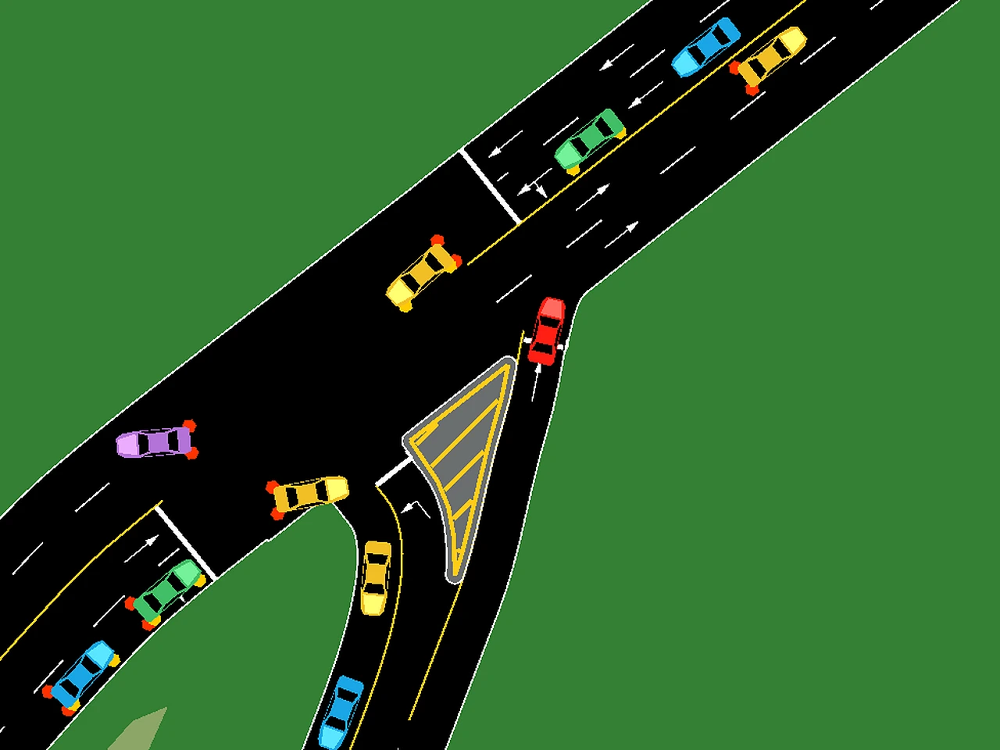
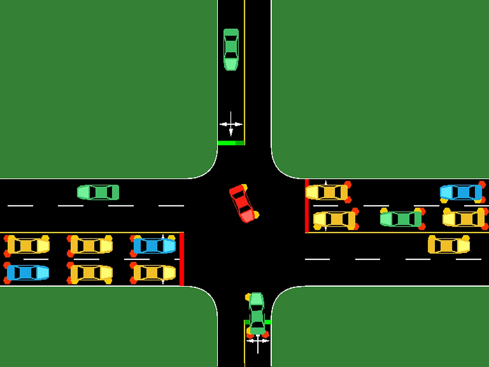
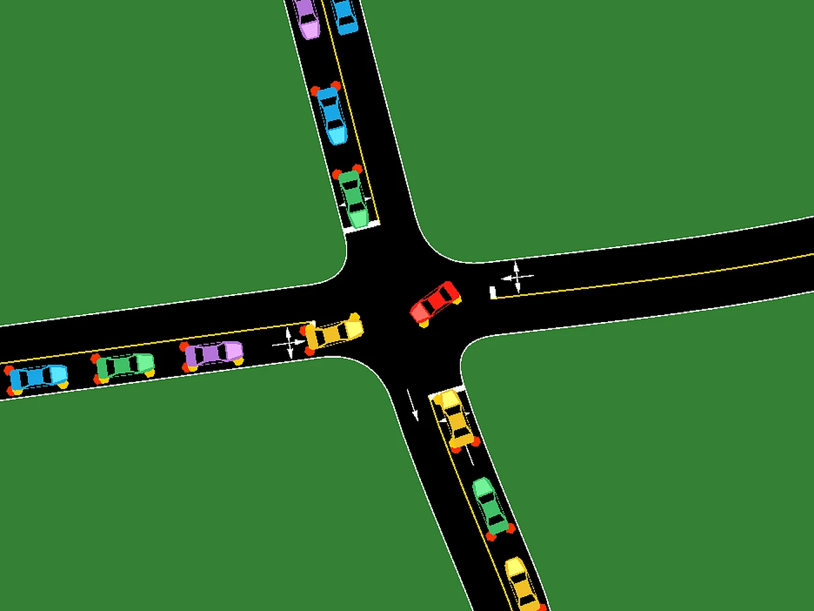

1회전교차로
회전 차량과의 간격을 고려해 진입합니다.

JEJU, SOUTH KOREA · AUTONOMOUS DRIVING
같은 도로, 달라지는 관측.
성산의 교차로에서 자율주행의 판단을 살펴봅니다.
WHY SEONGSAN
관광 이동 수요 2025년 제주 외국인 관광객은 약 224만 명이며, 성산해안은 같은 해 5월 서귀포시 관광블록 방문객 2위를 기록했습니다. 또한 성산읍에는 제주 제2공항이 계획되어 있어, 향후 관광 이동 수요가 늘어날 것으로 예상됩니다. [1]
실제 자율주행 노선 관광형 자율주행 버스 ‘일출봉GO’는 섭지코지·휘닉스 아일랜드와 성산항 일대를 연결합니다. [2] 이 서비스 노선을 참고해, 회전교차로·교차로·합류가 있는 핵심 구간을 SUMO 환경으로 구성했습니다.

THE QUESTION
해안 지역인 성산에서는 안개·해무로 인한 저시정 상황도 고려해야 합니다. [3] 성산 관측소에서는 시정 1km 미만이 연평균 16.8일 관측됐습니다. [4] 이렇게 주변 차량이 실제로 존재해도 보이지 않는다면, 자율주행의 판단과 주행 결과는 어떻게 달라질까요?
[1] 제주도관광협회 집계 인용 보도: 2025년 외국인 관광객 224만 2,187명 · 제주관광공사: 성산해안 방문객 순위(2025년 5월) · 국토교통부: 제주 제2공항 기본계획(2024.09.05)
[3] 제주지방기상청, 「제주지방 안개 잦은 발생 및 원인」(2011.07.05).
[4] 기상청 ASOS 성산(188), 2021–2025년 시간자료 팀 집계: 시정 1km 미만이 한 번 이상 관측된 날짜는 총 84일, 연평균 16.8일입니다. 안개 이외의 원인도 포함할 수 있는 저시정 통계이며, 해당 도로의 차량 감지거리를 뜻하지 않습니다. 연도별 집계 CSV ↓
01 / DRIVING VIDEO

02 / ROAD ENVIRONMENT
회전 차량과의 간격을 고려해 진입합니다.

본선 차량과 간격을 맞추며 합류합니다.

신호와 앞차의 움직임에 맞춰 주행합니다.

교차 차량의 접근과 통행 우선순위를 고려합니다.
전체 관광 노선 중 교차로·회전교차로·진입로가 포함된 핵심 구간을 모방했습니다. 지도 전체 관광 노선과 시뮬레이션 구현 범위는 구분합니다.
최종 공개 시 일반 차량 모델과 혼합 비율, 유입량, Traffic Seed와 교통량 배수의 기준을 함께 제시합니다. AV의 Action에 영향을 주는 충분한 상호작용이 평가 대상입니다.
03 / LIMITED VISIBILITY
관측 차량 미관측 차량 자차
자차·주변 차량, 교차로 접근 차량, 도로·경로·신호 정보를 구성합니다. 저시정의 감지거리, 미감지 입력 처리와 신호·V2I 제한 범위는 최종 설정에 맞춰 명시합니다.
PPO Policy가 가속도 −4 / 0 / +3 m/s²와 오른쪽 / 유지 / 왼쪽의 9개 조합 중 하나를 선택합니다. 최종 Reward 항목·가중치는 확정 후 공개합니다.
04 / THE DATASET
실제 환경과 Policy 입력을 구분
sₜ · oₜ선택한 Action과 전달한 명령
aₜReward, 실제 이동과 종료 이벤트
rₜ · events다음 State와 Observation
sₜ₊₁ · oₜ₊₁Policy 체크포인트 · Traffic Seed · 시정 조건
| 구분 | 주요 기록 | 목적 |
|---|---|---|
| 실제 State | 차량 ID·위치·속도·차로·방향·실제 신호 | 환경 상황 재구성 |
| Observation | Policy 입력·감지 차량·관측 신호 | 관측 정보 확인 |
| Action·결과 | 선택 명령·전후 차로·Reward·충돌·도착 | 판단과 실행 연결 |
| 종료 | terminated · truncated · 종료 사유 | 환경 종료·시간 제한 구분 |
최종 에피소드·전이 수, 시정별 구성과 저장 용량은 집계 후 공개합니다. 수업의 수집 목표 10⁷개 이상은 달성 실적과 구분하며 집계 단위도 함께 명시합니다.
05 / RESULTS & ANALYSIS
| 관측 조건 | 완주율 | 충돌률 | 위반율 | 완주 이동시간 |
|---|---|---|---|---|
| 일반 조건 | — | — | — | — |
| 저시정 조건 | — | — | — | — |
평가 준비 중
기본 주행 목표는 Collision Rate < 5%입니다. 충돌한 에피소드 수를 전체 평가 에피소드 수로 나누어 집계합니다. 비정상 정지·경로 실패·시간 초과·Teleport·시뮬레이터 오류도 확인합니다.
실제 문제 사례는 원인·수정·동일 조건 재평가 결과와 연결해 추가할 예정입니다. 아직 검증하지 않은 개선 효과는 제시하지 않습니다.
06 / RESOURCES
제공된 W9 코드 기준입니다. final_project 폴더에서 실행합니다. SUMO 1.27.1 · Python 3.11 확인 환경.
pip install -r requirements.txt
python view_policy_gui.py --checkpoint checkpoints/seongsan_w9_3000k.pt --map pluslane_v4 --traffic 3